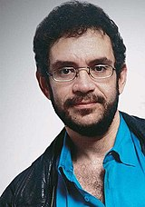
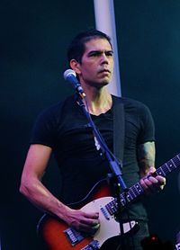
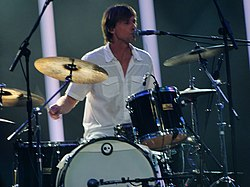

Renato Russo

Renato Russo, nome artístico de Renato Manfredini Júnior (Rio de Janeiro, 27 de março de 1960 – Rio de Janeiro, 11 de outubro de 1996), foi um cantor, compositor, produtor e multi-instrumentista brasileiro, célebre por ter sido líder, vocalista e fundador da banda Legião Urbana. Antes de fundar a banda, Renato integrou o grupo musical Aborto Elétrico, do qual saiu devido aos constantes desentendimentos com o baterista Fê Lemos. Adotou o sobrenome artístico Russo em homenagem ao inglês Bertrand Russell, ao suíço Jean-Jacques Rousseau e ao francês Henri Rousseau.
Renato morreu devido as complicações causadas pelo HIV em 11 de outubro de 1996, na época com 36 anos. Amigos do cantor afirmam que ele contraiu a doença após se envolver com um rapaz que conheceu em Nova Iorque, portador da doença, em 1989. Como integrante da Legião Urbana, Renato lançou oito álbuns de estúdio, cinco álbuns ao vivo, alguns lançados postumamente e diversos contos. Gravou ainda três discos solo e cantou ao lado de Herbert Vianna, Adriana Calcanhotto, Cássia Eller, Paulo Ricardo, Erasmo Carlos, Leila Pinheiro, Biquini Cavadão, 14 Bis e Plebe Rude.
Em outubro de 2008, a revista Rolling Stone Brasil promoveu a Lista dos Cem Maiores Artistas da Música Brasileira, em que Renato Russo ocupa o 25.º lugar.
Dado Villa-Lobos

Tocou na banda Dado e o Reino Animal antes de substituir Ico Ouro-Preto quando este desistiu de continuar na banda de rock brasiliense Legião Urbana. Assumiu a guitarra da Legião em março de 1983, as vésperas de um festival que seria realizado no auditório da Associação Brasiliense de Odontologia (ABO). Nesta mesma época Dado estava no começo do estudo de Ciências Sociais[1] na Universidade de Brasília (UnB). Seu plano era iniciar sua formação em Brasília e terminar seus estudos em Aix-en-Provence, mas deixou de lado os estudos para se dedicar à música.
Esteve na Legião Urbana até o seu fim, ocorrido com a morte de Renato Russo em 11 de outubro de 1996. Em 22 de outubro de 1996 Dado, junto de Marcelo Bonfá, anunciou oficialmente o fim da banda.
Em 1993, juntou-se ao baixista da Plebe Rude, André X, para fundar a RockIt!, uma gravadora independente que revelava artistas novos. Dentre os discos lançados por ela, está o segundo álbum solo de Dinho Ouro Preto, autointitulado.
Carreira pós-Legião Urbana
Dado em 2012
É o responsável pela produção dos últimos discos da Legião: A Tempestade (ou O Livro dos Dias) , Uma Outra Estação e Como É que Se Diz Eu Te Amo. É também autor das trilhas sonoras dos filmes O Homem do Ano (de José Henrique Fonseca), Bufo & Spallanzani (de Flávio Tambellini) - pela qual recebeu o prêmio de melhor trilha sonora no Festival do Cinema Brasileiro, em Miami - e "Pro Dia Nascer Feliz" (de João Jardim) - também vencedor do Kikito de Melhor Trilha Sonora no Festival de Gramado de 2006.
Em 2005, lançou seu primeiro disco solo, Jardim de Cactus - Ao Vivo, numa parceria de seu selo Rockit! com a gravadora EMI dentro do projeto MTV Apresenta. O DVD e CD foram gravados em abril do mesmo ano. A versão de estúdio do álbum foi disponibilizada em 2005 para download gratuito e somente foi lançada em CD em 2009 pela Rockit! em parceria com o selo Black Records. Em 2007 Dado participou do disco "Liebe Paradiso", na faixa "Polaroides", juntamente com Sandra de Sá, Artur Maia, Donatinho, Bernardo Bosisio, Renato "Massa" Calmon, Armando Marçal e Sacha Amback.
Em 2011 Dado participou da apresentação da Orquestra Sinfônica Brasileira do Rock in Rio IV no palco mundo com a música "Será?", a apresentação "Rock in Rio - Concerto Sinfônico Legião Urbana" foi lançada em CD e DVD em 2013. Pouco depois, juntou-se a Toni Platão, Dé Palmeira e Charles Gavin para formar o supergrupo Panamericana, que toca sucessos do rock sul-americano.
Em 30 de maio de 2012, participou do Tributo ao Legião Urbana com Wagner Moura, onde se desentendeu com um fã, durante a apresentação, mas no final deu tudo certo. Ainda em 2012, Dado e seu ex-parceiro de Legião Urbana e amigo Marcelo Bonfá, ambos estão viajando com a banda mineira Jota Quest há um bom tempo fazendo participações nos shows da banda tocando algumas canções da Legião e participaram do DVD Multishow ao Vivo: Folia & Caos, o mais novo da banda Mineira tocando o clássico "Tempo perdido". Ainda em 2012, em 27 de novembro, Dado lançou seu segundo disco solo, O Passo do Colapso, somente em formato digital no iTunes. O álbum teve como single a música "Colapso".
Desde 4 de maio de 2014 apresenta no canal Bis!, na TV fechada, um programa de música chamado Estúdio do Dado, misturando entrevistas e músicas tocadas entre ele e seus convidados.
Em 2015, participou da canção "Trono de Estudar", composta por Dani Black em apoio aos estudantes que se articularam contra o projeto de reorganização escolar do governo estadual de São Paulo. A faixa teve a participação de outros 17 artistas brasileiros: Chico Buarque, Arnaldo Antunes (ex-Titãs), Tiê, Paulo Miklos (Titãs), Tiago Iorc, Lucas Silveira (Fresno), Filipe Catto, Zélia Duncan, Pedro Luís (Pedro Luís & A Parede), Fernando Anitelli (O Teatro Mágico), André Whoong, Lucas Santtana, Miranda Kassin, Tetê Espíndola, Helio Flanders (Vanguart), Felipe Roseno e Xuxa Levy.[22]
Representação na mídia
Em 2011, foi filmado o longa-metragem Somos tão Jovens, no qual seu filho Nicolau Villa-Lobos o interpretou.[23] O filme foi lançado em maio de 2013.[24][25]
Marcelo Bonfá

Marcelo Augusto Bonfá viveu em Itapira até 1977, quando mudou-se para Brasília após seu pai, funcionário do Banco do Brasil, ser transferido para a capital brasileira. Bonfá não demorou a se ambientar. Apesar de ser de uma cidade do interior paulista e a maioria dos jovens de Brasília que moravam em sua quadra terem vindo do Rio de Janeiro, conseguiu fazer amizade rapidamente. Desta forma fez amizade com Fê Lemos, que deixava-o brincar em sua bateria. Sua primeira bateria foi presente de seu pai, quando estava de férias em São Paulo.
Bonfá formou uma banda com André Müller (futuro membro da banda punk Plebe Rude), chamada Metralhaz, que teve curta duração, além da banda Blitx 64. Também tocou na banda Dado e o Reino Animal, de seu amigo Dado Villa-Lobos.
Legião Urbana
Em 1982 foi chamado por Renato Russo para juntos iniciarem uma banda, chamada Legião Urbana. Bonfá permaneceu na Legião até seu fim, anunciado oficialmente em 22 de outubro de 1996, após a morte de Renato Russo, em 11 de outubro de 1996.
Em 1993, ainda na Legião Urbana, Marcelo, que tinha habilidade para desenhar, passou a realizar trabalhos de computação gráfica.
Pós-Legião Urbana
No ano de 2000, Marcelo Bonfá lançou seu primeiro trabalho solo, O Barco Além do Sol, pela gravadora Trama, tendo vendagem superior a 30 mil cópias, e o single Depois da Chuva foi um dos mais executados nas rádios do Brasil.
Em 2004, lançou o seu segundo trabalho solo intitulado Bonfá + Videotracks distribuído pela EMI.
O álbum solo Mobile é lançado em 2007, no formato digital. Nestes discos solo, Bonfá contou com a parceria do letrista Gian Fabra.
Marcelo Bonfá, (juntamente com o parceiro da extinta Legião Urbana, Dado Villa-Lobos), entre 2011 e 2012 participou de alguns shows da banda Jota Quest durante a turnê de 15 anos do grupo mineiro. No mesmo ano participou do Rock in Rio 4 em homenagem à Legião Urbana contando com participações de Toni Platão, Herbert Vianna, Pitty, Dinho Ouro Preto e Rogério Flausino.
Em 2012, participou do tributo MTV à Legião Urbana, ao lado de Dado e o ator Wagner Moura nos vocais. Neste mesmo ano, monta a banda Bonfá e os Corações Perfeitos, no qual é vocalista e seu filho João Pedro toca a guitarra. As canções foram disponibilizadas gratuitamente em seu site oficial.
Em 2015, se reúne novamente com Dado para celebrar os 30 anos do primeiro álbum da Legião Urbana e saem em turnê chamada "Legião Urbana XXX Anos", com André Frateschi nos vocais. Os primeiros shows aconteceram em Santos, no litoral paulista, em 23 de outubro, e Itacaré, no interior da Bahia, em 1º de novembro. Com o sucesso da empreitada, em 2018, os músicos saem em turnê de comemoração dos álbuns "Dois" e "Que País é Este".
Em 23 de abril de 2020, lança o EP Outono, que contem 5 faixas, com participações dos baixistas Champignon e PJ.
Em sua carreira solo, já vendeu mais cem mil cópias de seus álbuns.
Vida pessoal
Tem dois filhos, Tiago Bonfá (nascido em 1991) fruto de relacionamento com Simone Bonfá e João Pedro Bonfá (nascido em 1988), também músico, fruto de seu relacionamento com a atriz Isabela Garcia e membro de sua banda solo. Sua primeira neta, Luisa, filha de João Pedro e Ana Glória, nasceu em outubro de 2011.
Produz a Cachaça Perfeição em sua Fazenda Vistalinda em Santo Antônio do Rio Grande (MG). A cachaça é orgânica, sem uso de agrotóxicos e química.
Voltar